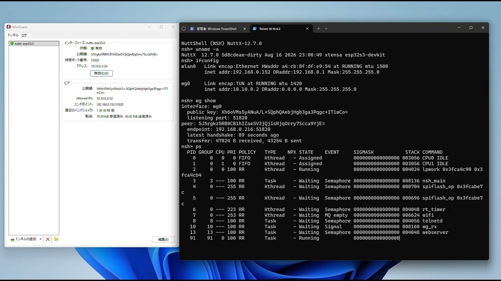

A WireGuard VPN implemented as a wg0 network device — on real hardware, and inside a real NuttX kernel build.
ESP32-S3 & SPRESENSETUNNEL UP OVER REAL WI-FI
Real WireGuard peersLINUX KERNEL, WINDOWS CLIENT
rv-virt knetnsh64RUNS IN A REAL KERNEL BUILD (BUILD_KERNEL)
NuttX 13.0.1 / master / 12.7.0APPS V0.1.1 · ONE SOURCE
Satoru Akita / Sony Semiconductor Solutions
Apache NuttX
AITRIOS edge AI device (ESP32)
SPRESENSE
1 / 39
Today I will talk about bringing WireGuard to Apache NuttX.
||
It is a WireGuard VPN implemented as a wg0 network device. The tunnel is up over real Wi-Fi on ESP32-S3 and on SPRESENSE, and the peers are always real WireGuard implementations — the Linux kernel module and the official Windows client. The apps version builds from one source on three NuttX versions. Later in the talk the new driver also runs inside real KERNEL and PROTECTED builds, which is the harder and more interesting half.
||
But the point of this talk is not that it works. It is what "works" hid, and what pushing it into the kernel forced into the open.
Agenda
Seven chapters, about thirty-three minutes.
1
Background
What NuttX is, where it's used, Sony's history with it, my own path into it, and the problem that led to WireGuard.
~6 MIN
2
Porting Strategy
Starting from wireguard-lwip and mapping it onto NuttX's own netdev.
~4 MIN
3
Hidden Pitfalls
Five bugs a working demo never revealed — and the shape they share.
~7 MIN
4
Kernel Driver
Moving wg0 from apps/ into a real in-tree kernel device.
~5 MIN
5
Verification
Seven environments, what a passing ping can't tell you, and one design call.
~5 MIN
6
Demo
An ordinary host, reached through the tunnel, on real hardware.
~2 MIN
7
Toward Upstream
Operability, portability, contributing back, and what to carry out.
~4 MIN
2 / 39
Here is the shape of the talk.
||
Seven chapters. Background — what NuttX is, where it's used, Sony's history with it, my own path into it, and the problem that led to WireGuard — then the porting strategy that started from an existing lwIP implementation, five hidden pitfalls a working demo never revealed, moving the driver into the kernel, how it was verified, a short demo, and then what to carry out and where this goes upstream. About thirty-three minutes, then questions.
Agenda
Seven chapters, about thirty-three minutes.
1
Background
What NuttX is, where it's used, Sony's history with it, my own path into it, and the problem that led to WireGuard.
~6 MIN
2
Porting Strategy
Starting from wireguard-lwip and mapping it onto NuttX's own netdev.
~4 MIN
3
Hidden Pitfalls
Five bugs a working demo never revealed — and the shape they share.
~7 MIN
4
Kernel Driver
Moving wg0 from apps/ into a real in-tree kernel device.
~5 MIN
5
Verification
Seven environments, what a passing ping can't tell you, and one design call.
~5 MIN
6
Demo
An ordinary host, reached through the tunnel, on real hardware.
~2 MIN
7
Toward Upstream
Operability, portability, contributing back, and what to carry out.
~4 MIN
3 / 39
Here we go — chapter one.
About Me
Not a NuttX kernel developer — the person who had to reach devices after they shipped.
Satoru Akita — edge AI engineer at Sony Semiconductor Solutions, working with Apache NuttX from the application side.
RoboticsMolecular robotics, BIOMOD world champion (2015)
Computer VisionAI / image-processing systems engineering
Edge AIAITRIOS edge AI cameras
Embedded SystemsSPRESENSE, embedded app contest — world 3rd
NuttX / WireGuardThis talk
I came to NuttX from the application and deployment side — not by writing its kernel.
Every step on this path is a system I had to integrate and run, not one I built from the silicon up. That is the vantage point for everything that follows.
4 / 39
Quickly, who is talking — and from where.
||
I am an edge AI engineer at Sony Semiconductor Solutions, and I work with Apache NuttX from the application side. The path that got me here runs through molecular robotics, computer vision and AI systems work, edge AI cameras, and embedded systems on SPRESENSE — and NuttX and WireGuard are the latest stop, not the start. I want that to be explicit: I am not a NuttX kernel developer who decided to add a VPN. I am someone who kept running into NuttX from the application and deployment side, and eventually ran into a problem I couldn't solve from there. That is the story the next few slides tell.
Project Overview
This project implements WireGuard as a NuttX network device.
Packets routed to wg0 are encrypted and sent as UDP; UDP arriving on the port is decrypted and delivered as if it had arrived on wg0. The peer can be any existing WireGuard endpoint.
Takeaway
wg0 looks like an ordinary interface to applications; only the "wire" underneath is a UDP socket instead of a physical link.
5 / 39
Here is the whole idea in one picture.
||
Apache NuttX is a POSIX-compliant RTOS with its own TCP/IP stack. It had no VPN. This project adds wg0 as a virtual network interface: applications see an ordinary interface, and underneath, the encrypted transport is a UDP socket. The peer on the other end is a real WireGuard endpoint — Linux, Windows, or another gateway.
||
That POSIX and BSD-socket shape is why NuttX is a good fit for this work. This is not a claim that FreeRTOS or Zephyr cannot run a VPN; it is a claim about how naturally a VPN can become an ordinary network device here.
Background
What is Apache NuttX?
RTOSPOSIX-orientedBSD socketsFilesystem / VFSNSH shellNative networkingDevice driversApache Software Foundation TLP
Takeaway
NuttX brings a Unix-like programming model — POSIX APIs, BSD sockets, filesystems, and devices — to constrained embedded systems.
6 / 39
Before anything else: what NuttX actually is.
||
NuttX is a real-time operating system built around a standards-first promise. It is POSIX and ANSI-API oriented, it speaks BSD sockets for networking, it has a real filesystem and VFS layer, a shell called NSH, native networking, and a device-driver model — all scaled down to run on microcontrollers from 8 to 64 bit. It is also an Apache Software Foundation top-level project, developed in public by its contributor community.
||
The point I want to land here is narrow but important: NuttX is a small RTOS with a Unix-like programming model. That combination is unusual, and it is why almost everything later in this talk — sockets, netdevs, a POSIX-shaped port — is possible at all.
NuttX is niche next to FreeRTOS and Zephyr by star count, but it already ships in production hardware, from drones to space missions.
Sources: nuttx.apache.org · nuttx.apache.org/market-share · docs.px4.io · GitHub star counts, October 2026
7 / 39
Thirty seconds on where NuttX sits, and whether it is a toy.
||
Three capable RTOSes, three different centers of gravity. FreeRTOS is a deliberately small real-time kernel for MCU firmware and control. Zephyr is an integrated platform for connected devices, wearables and industrial IoT. NuttX is the Unix-like one: networking, filesystems, drivers, used in drones and sensing. Not a ranking — a shape. By GitHub stars NuttX is the smallest of the three, and I want to say that plainly rather than hide it; stars are developer visibility, not deployment volume.
||
And the deployment side is real: fifteen-plus architectures, three hundred-plus boards, fifteen hundred-plus configuration templates upstream. In production it runs Sony devices, PX4 flight controllers, more than a thousand Xiaomi OpenVela SKUs, and it flew on Japan's 2024 lunar mission. Niche next to the giants, not a toy project.
History
NuttX at Sony — from audio to edge sensing.
2015
Sony audio products
NuttX shipping in production audio devices.
2018–19
SPRESENSE / CXD56xx
Audio, GNSS, camera and multicore support land in NuttX; presented at Open Source Summit + ELC Europe 2019.
2020
Upstream collaboration
Sony engineers become major NuttX upstream contributors — “A Journey from Fork to Mainline,” NuttX Online Workshop 2020.
2020s
Sensing & edge devices
Camera, GNSS and sensing use cases broaden across deployed products.
Takeaway
Sony's use of NuttX predates edge AI; years of shipped audio and SPRESENSE experience paved the way into sensing and camera systems.
Sources: M. Ishikawa (Sony), “NuttX for Embedded Linux Developers,” OSS+ELC Europe 2019 · A. Jerpelea (Sony), “A Journey from Fork to Mainline,” NuttX Online Workshop 2020 · nuttx.apache.org/docs (CXD56xx)
8 / 39
This is Sony's history with NuttX, not mine yet — and it is longer than edge AI.
||
Sony has shipped audio products running NuttX since around 2015. SPRESENSE and its CXD56xx chip, introduced a few years later, brought audio, GNSS, camera and multicore support into NuttX, and Masayuki Ishikawa from Sony presented that work at Open Source Summit plus Embedded Linux Conference Europe in 2019. From there, Sony engineers — including Alin Jerpelea, who later chaired the NuttX project management committee — became significant upstream contributors; his 2020 talk was literally titled "A Journey from Fork to Mainline."
||
I am not claiming one engineer caused Sony's adoption of NuttX — I don't have a source for that, so I won't say it. What I can say from public talks and the docs is simpler: Sony's NuttX usage predates edge AI by the better part of a decade, and it broadened over time into camera, GNSS and sensing work. That is the ground my own experience stands on.
Experience
NuttX in SPRESENSE and AITRIOS — my side of it.
SPRESENSE
NuttX SDK · sensing & camera · GNSS / LTE · prototyping and embedded development.
AITRIOS / edge AI camera
Edge AI · camera deployment · ESP32 + NuttX · operation in the field, not on a bench.
My perspective: application development → system integration → deployment & operation.
Takeaway
My problem was not getting NuttX to run — it was reaching NuttX devices after they were deployed.
9 / 39
That was Sony's history. This is mine — same hardware family, a different vantage point.
||
On SPRESENSE, I work with the NuttX SDK for sensing, camera, GNSS and LTE work — prototyping and embedded development, application side. On AITRIOS edge AI cameras, built around ESP32 and NuttX, the work is about getting a camera deployed and operating in the field, not sitting on a bench next to a debugger.
||
The common thread is the direction I approach NuttX from: application development, then system integration, then deployment and operation. I never had to write a NuttX driver to do any of that — until this project. And the problem that got me there was not "how do I get NuttX to run." It was "how do I reach a NuttX device after it has already been deployed."
Problem
The remote access gap.
Public exposure
Open a global IP straight to the device.
Bespoke protocol
Invent and maintain your own secure channel.
Vendor cloud
Depend on someone else's cloud to reach your own device.
Takeaway
The missing piece was a standard authenticated network path all the way to the NuttX device.
10 / 39
Now the problem itself, stated plainly.
||
Wi-Fi security is real, but it protects one hop: the radio link between the device and the access point. Everything before that — the engineer, the internet, the router — is outside what WPA2 or WPA3 can promise. What I needed was authentication and encryption for the whole path, engineer to device, not just the last few meters of it.
||
Without that, the practical options are all worse: expose the device with a public IP and hope, invent and maintain a bespoke secure protocol, or hand the connection to a vendor's cloud. The same gap shows up in edge AI, industrial IoT, and remote infrastructure generally — it is not specific to this one project.
Solution
Why WireGuard fits this problem.
Modern IP-layer VPN small, simple design — a fraction of the codebase of IPsec or OpenVPN.
UDP transport, public-key peers no certificate authority or session negotiation to operate.
Already everywhere mainline Linux kernel, an official Windows client, interoperable with existing endpoints — not a bespoke protocol.
Takeaway
WireGuard solves the access problem with a standard protocol instead of a bespoke security layer or proprietary cloud.
11 / 39
Given that problem, why WireGuard specifically.
||
WireGuard is a modern, IP-layer VPN: small and simple by design, a tiny fraction of the code size of IPsec or OpenVPN, which matters a lot on a microcontroller. It runs over plain UDP, and peers are identified by public keys rather than certificates or a negotiated session. And critically, it is not exotic: it has been in the mainline Linux kernel for years, there is an official Windows client, and the other end of the tunnel can be any existing WireGuard peer.
||
So the choice was not "adopt a product." It was "adopt a standard protocol instead of inventing a bespoke one or leaning on a vendor's cloud." That is what makes it fit this specific problem.
Architecture
WireGuard on the NuttX network stack.
Takeaway
To NuttX, wg0 is an ordinary network device; WireGuard turns its packets into encrypted UDP underneath.
12 / 39
One level more technical than the overview: this is where implementation starts.
||
Outbound, a packet comes down from the application through TCP or UDP over IP, reaches wg0 like any other netdev, gets encrypted by WireGuard, and leaves as a UDP datagram over wlan0 on a board, or over usrsock where Wi-Fi is itself a socket-based peripheral. Inbound traffic is the same path in reverse: a UDP datagram arrives, WireGuard decrypts it, and it is handed back up to wg0 as if it had arrived on an ordinary interface.
||
Everything from here is about building that middle section — wg0 and the encryption step — without touching the layers above or below it.
Agenda
Seven chapters, about thirty-three minutes.
1
Background
What NuttX is, where it's used, Sony's history with it, my own path into it, and the problem that led to WireGuard.
~6 MIN
2
Porting Strategy
Starting from wireguard-lwip and mapping it onto NuttX's own netdev.
~4 MIN
3
Hidden Pitfalls
Five bugs a working demo never revealed — and the shape they share.
~7 MIN
4
Kernel Driver
Moving wg0 from apps/ into a real in-tree kernel device.
~5 MIN
5
Verification
Seven environments, what a passing ping can't tell you, and one design call.
~5 MIN
6
Demo
An ordinary host, reached through the tunnel, on real hardware.
~2 MIN
7
Toward Upstream
Operability, portability, contributing back, and what to carry out.
~4 MIN
13 / 39
Quick check-in: background is done, porting strategy is next.
Porting Strategy
Reusing wireguard-lwip without lwIP.
Protocol & crypto — KEEP
Handshake, transport, BLAKE2s, ChaCha20-Poly1305, Curve25519. Portable C, no OS dependency. Used as-is.
Platform hooks — ADAPT
All OS-specific behaviour isolated behind wireguard-platform.h — four functions: clock, random bytes, TAI64N time, load signal.
lwIP network glue — REPLACE
wireguardif.c's lwIP netif registration and buffers. NuttX has no lwIP; this layer becomes the actual porting work.
Takeaway
A clean platform boundary let the protocol and crypto move unchanged; only the OS and network glue had to be replaced.
14 / 39
Why start from smartalock/wireguard-lwip instead of writing a crypto stack from scratch.
||
wireguard-lwip splits cleanly into three layers. The protocol and crypto — handshake, transport, BLAKE2s, ChaCha20-Poly1305, Curve25519 — are portable C with no OS dependency, so they come across untouched. All OS-specific behaviour was already isolated behind one header, wireguard-platform.h, as four functions. Only the lwIP network glue, the part that registers an lwIP netif and manages lwIP buffers, needed to be replaced, because NuttX does not have lwIP at all.
||
The fact that I didn't have to rewrite anything is not luck — it's what a clean platform boundary buys you. That boundary is the reason this port was weeks, not months.
Design
Mapping lwIP onto NuttX netdev.
Concept
lwIP
NuttX
NIC abstraction
struct netif
struct net_driver_s
Buffers
pbuf
iob
Registration
netif_add()
netdev_register()
Send trigger
callback
devif_poll()
wg0 is a NET_LL_TUN netdev, and its wire is a UDP socket.
Takeaway
Porting meant mapping onto NuttX's native abstractions, not carrying lwIP into NuttX.
15 / 39
The single most important porting decision.
||
Rather than drag lwIP into NuttX, I mapped the abstractions onto NuttX's own. netif becomes net_driver_s, pbuf becomes iob, netif_add becomes netdev_register, and the send callback becomes NuttX's devif_poll. wg0 is registered as a TUN-type netdev, and the "wire" underneath it is a UDP socket.
Result
A working tunnel is only the beginning.
Layer
Porting cost
In this port
Protocol & crypto
None — portable C, as-is
3,079 lines byte-identical to upstream
OS hooks
Low — four functions
clock, /dev/urandom, TAI64N, load
Network glue
The actual work
netdev + UDP socket + RX task
It worked: wg genkey / set / setconf at run time — no rebuild to change keys or peers.
And that is exactly where the interesting part begins — because working was the easy part.
Takeaway
Getting a tunnel up was the cheapest milestone; almost everything interesting came after it already “worked.”
16 / 39
The result of the first version.
||
The protocol and crypto came across byte-identical — over three thousand lines unchanged. The four OS hooks are small. The real work was the network glue. And it worked: you can generate a key, set peers, load a config, all at run time, no rebuild. So far, a success story. The rest of the talk is about what that success hid.
Agenda
Seven chapters, about thirty-three minutes.
1
Background
What NuttX is, where it's used, Sony's history with it, my own path into it, and the problem that led to WireGuard.
~6 MIN
2
Porting Strategy
Starting from wireguard-lwip and mapping it onto NuttX's own netdev.
~4 MIN
3
Hidden Pitfalls
Five bugs a working demo never revealed — and the shape they share.
~7 MIN
4
Kernel Driver
Moving wg0 from apps/ into a real in-tree kernel device.
~5 MIN
5
Verification
Seven environments, what a passing ping can't tell you, and one design call.
~5 MIN
6
Demo
An ordinary host, reached through the tunnel, on real hardware.
~2 MIN
7
Toward Upstream
Operability, portability, contributing back, and what to carry out.
~4 MIN
17 / 39
Background and porting strategy are done. Now the part of the talk this whole thing is organized around.
Pattern
Shallow tests pass, deeper tests fail.
A shallow test passes. A deeper one fails.
And because the shallow test passed, you trust that area and spend hours looking somewhere else. That loop repeated all the way through this project — and it did not stop at the apps version.
18 / 39
This is the heart of the talk.
||
Every difficult bug in this project had the same shape. A shallow test passes; a deeper one fails. Worse, the passing shallow test convinces you that area is fine, so you search everywhere else for hours. The next slides are instances of that pattern — five in the apps version, and then two more when I pushed it into the kernel.
Pitfall 1 / 7
A return code of 0 that did nothing.
setsockopt(SO_RCVTIMEO) returns 0 — success.
But recvfrom() still blocks forever. The timeout was accepted and ignored.
A perfect chicken-and-egg:
timer never fires → no handshake initiation is sent → the peer stays silent → recvfrom() never returns.
Takeaway
A successful setsockopt() return does not prove the option took effect — and an unhandled option can hide behind a deadlock instead of an obvious error.
19 / 39
The first taste: a success return with no effect.
||
Setting a receive timeout returned zero, success. But recvfrom still blocked forever — the option was accepted and silently ignored. That produced a perfect deadlock: the timer never fired, so no initiation was sent, so the peer never replied, so recvfrom never returned to let the timer fire.
Pitfall 2 / 7
Created successfully. Did not survive.
The RX thread was started with pthread_create() + pthread_detach().
When the wg command exited, the thread stopped — not even visible in ps.
A usleep() right after create made the thread's printf appear — so it was created.
My mistake: I read detach as “outlives the command.” It only controls when the thread's resources are reclaimed — not whether it survives its launcher exiting.
Takeaway
pthread_detach() controls resource reclamation, not lifetime — a detached thread still dies with the task group that launched it.
20 / 39
The second: a lifecycle assumption that did not hold.
||
The receive thread was created detached. When the launching command exited, the thread stopped — it did not even show up in ps. A short sleep after creation let its printf run, so it really was created. My mistake was reading detach as "it will outlive the command" — detach only controls when the thread's resources are reclaimed, not whether it survives its launcher exiting. So when the command exited, the thread went with it. That is why the kernel version owns the thread in the driver instead.
Pitfall 3 / 7 · the good one
ping works. TCP dies.
Same tunnel: ping is 0% loss. A telnet 3-way handshake even completes — then the connection dies.
Sends that worked ran in the wg_rx task's own context. Sends from another task got EBADF.
Cause: fds are scoped to the task group, not global.
Fix: the fd-less internal API — psock_*() on a struct socket, usable from any task.
Takeaway
In NuttX, file descriptors are scoped to the task group, not global — a socket created in one task's fd table is not usable by another task's fd, even against the same kernel object.
21 / 39
My favourite bug in the project.
||
On the same tunnel, ping was perfect and even a TCP handshake completed — then the connection died. Instrumenting the send path showed EBADF, bad file descriptor. The sends that worked all happened inside the receive task itself — handshake replies, keepalives, the ping echo, the SYN-ACK. Sends from any other task failed.
||
The cause: in NuttX, file descriptors are scoped to the task group, not to the whole system, and not global. The fix was to stop going through fds entirely and use NuttX's internal socket API, which operates on a struct socket — just memory — usable from any task. This is exactly why the kernel version holds the socket as a struct socket.
Pitfall 4 / 7
“No real impact” was 10×.
The fd-less fix broke poll() too. Stopgap: poll every 50 ms.
Assumption: “it just wakes the CPU when idle.” Wrong — arriving packets waited up to 50 ms, and that capped throughput by 10×.
Fix: hook psock_poll() with a callback and a semaphore — real blocking wait.
Takeaway
The 50 ms polling workaround preserved correctness but reduced throughput by roughly an order of magnitude — an unmeasured stopgap can look free and cost 10×.
22 / 39
The fourth: an assumption I did not measure.
||
The fd-less fix also broke poll, which is fd-based, so as a stopgap I polled the socket every fifty milliseconds. I assumed the only cost was waking the CPU when idle. Wrong. Every arriving packet waited up to fifty milliseconds, and that alone capped throughput — about ten times slower than it should be. I measured "no impact" and it was ten x. The real fix was a proper blocking wait: a callback on psock_poll and a semaphore.
Pitfall 5 / 7
sim passes. Hardware freezes.
Config persistence via wg showconf > /data/wg0.conf froze the board — only on the SPIFFS of real hardware, never in sim.
The wg_rx task calls ipv4_input() on its own stack — the whole TCP depth rides on it, plus reply encryption.
Default 3072 B was a number nobody had measured. Found with CONFIG_STACK_COLORATION + ps.
Takeaway
A task's default stack size is a guess until it's measured on the hardware that will actually run the deepest call path — sim's generous stacks hide the deficit.
23 / 39
The fifth, and it comes back later: stacks nobody measured.
||
Persisting the config by redirecting into a file froze the board, but only on real hardware's flash filesystem, never in sim. The cause was the receive task's stack. It calls into the IP stack on its own stack, so the whole TCP call depth lands there, and for packets it answers immediately, the reply encryption too. The default 3072 bytes was a number nobody had measured. Stack coloration plus ps found it. Hold that thought.
Agenda
Seven chapters, about thirty-three minutes.
1
Background
What NuttX is, where it's used, Sony's history with it, my own path into it, and the problem that led to WireGuard.
~6 MIN
2
Porting Strategy
Starting from wireguard-lwip and mapping it onto NuttX's own netdev.
~4 MIN
3
Hidden Pitfalls
Five bugs a working demo never revealed — and the shape they share.
~7 MIN
4
Kernel Driver
Moving wg0 from apps/ into a real in-tree kernel device.
~5 MIN
5
Verification
Seven environments, what a passing ping can't tell you, and one design call.
~5 MIN
6
Demo
An ordinary host, reached through the tunnel, on real hardware.
~2 MIN
7
Toward Upstream
Operability, portability, contributing back, and what to carry out.
~4 MIN
24 / 39
Five pitfalls down. Now the harder half: making this a real kernel driver.
Part 3 · Going deeper
Into the kernel.
The limit of version 1
It lives in apps/ and leans on psock_* internals. Fine for a FLAT build — but it cannot be a first-class in-tree driver, and it does not fit PROTECTED / KERNEL builds, where apps and kernel are separated.
The move
Put the device in the kernel — drivers/net/wireguard/ — and drive it from a small user-space wg command over ioctl.
Takeaway
An apps/-space port proves the protocol; only an in-tree kernel driver is a first-class device that survives PROTECTED and KERNEL builds.
25 / 39
This is the additional work since the first version, and the part that makes it mergeable.
||
Version one lives in apps and reaches into socket internals. That is fine for a flat build, but it can never be a proper in-tree driver, and it does not fit the protected and kernel builds where user space and kernel are separated. So I moved the device into the kernel, under drivers/net/wireguard, and drove it from a tiny user-space wg command through ioctl.
The Kernel Design
A kernel netdev, an ioctl ABI, a write-only key.
Kernel netdev netdev_lowerhalf owning a UDP socket, a receive kernel thread, timers and cookies — the driver owns the socket and thread, so v1's launcher-lifetime dependency is gone.
Flat, pointer-free ioctl ABI SIOCS/GWGIF, SIOCS/D/GWGPEER — no pointers, because in PROTECTED / KERNEL the kernel copies the caller's struct directly.
Private key is write-only the get ioctl never returns the private key.
Kernel crypto is NuttX's own BLAKE2s, ChaCha20-Poly1305, Curve25519 from crypto/ — nothing vendored on the kernel side. The one vendored file, MIT X25519, is in the user-space command's offline genkey — reaching the kernel's Curve25519 via cryptodev instead would pull in the whole software cipher suite for one scalar multiply.
Takeaway
The socket, the thread, and the pointer-free ABI are one fix: don't trust code that can exit, or a boundary it can't cross.
26 / 39
The shape of the real driver.
||
wg0 is now a lower-half netdev in the kernel, owning the UDP socket and a receive kernel thread — so the socket-ownership and launcher-lifetime problems from part two go away by design. Configuration is a flat, pointer-free ioctl ABI, pointer-free because the kernel copies the caller's structure directly. The private key is write-only: the get ioctl never hands it back — though it still lives in the config file on the user side. The kernel-side crypto is NuttX's own; the only vendored code is a small MIT X25519 in the user-space command, for offline key generation.
Two more bugs · same shape
Deeper depth, same failure.
A bug in NuttX's own crypto
chacha20poly1305 put the counter in the wrong nonce bytes. Counter 0 matches, so the handshake succeeds and every data packet after the first fails. No in-tree caller had ever exercised it. Two-line fix, going upstream as a separate crypto: PR.
A BUILD_KERNEL-only crash
wg_set_if() snapshotted peers into a 6 KB array on the stack; the kernel stack is 3 KB → overflow → heap corruption → panic. sim (FLAT, big stacks) never hit it. Moved to the heap.
Takeaway
A successful WireGuard handshake does not prove that data-path crypto or kernel behavior is correct — both bugs here only surfaced past the handshake, on a real kernel build.
27 / 39
And the same pattern held at kernel depth — twice.
||
First, a bug in NuttX's own ChaCha20-Poly1305: the counter went into the wrong bytes of the nonce. For counter zero the two layouts are identical, so the handshake completes and then every data packet after the first fails to decrypt. Shallow passes, deep fails. There was no in-tree caller, so it had never been exercised. A two-line fix, and it is going upstream as its own crypto PR — porting into the project found a latent bug in the project.
||
Second, a crash that only happened in a kernel build. Setting the key snapshotted the peers into a six-kilobyte array on the stack, and the kernel stack is three kilobytes — overflow, heap corruption, panic. On sim, with large task stacks, it never showed. Exactly the stack lesson from part two, one level deeper. Moved to the heap.
Agenda
Seven chapters, about thirty-three minutes.
1
Background
What NuttX is, where it's used, Sony's history with it, my own path into it, and the problem that led to WireGuard.
~6 MIN
2
Porting Strategy
Starting from wireguard-lwip and mapping it onto NuttX's own netdev.
~4 MIN
3
Hidden Pitfalls
Five bugs a working demo never revealed — and the shape they share.
~7 MIN
4
Kernel Driver
Moving wg0 from apps/ into a real in-tree kernel device.
~5 MIN
5
Verification
Seven environments, what a passing ping can't tell you, and one design call.
~5 MIN
6
Demo
An ordinary host, reached through the tunnel, on real hardware.
~2 MIN
7
Toward Upstream
Operability, portability, contributing back, and what to carry out.
~4 MIN
28 / 39
The driver exists. Now, how do I know it's actually correct.
Verification
Seven places it has to hold.
Environment
Implementation
Confirmed
sim:wireguard
kernel driver
builds clean (the config CI compiles)
rv-virt knetnsh64
kernel · BUILD_KERNEL
virtio-net tunnel to Linux; wg a separate ELF across the syscall boundary
rv-virt pnsh64
kernel · BUILD_PROTECTED
tunnel with the MPU split live — wg in nuttx_user, every ioctl across the boundary, no fault
rv-virt knetnsh64_smp
kernel · SMP, 4 CPUs
a flood concurrent with reconfiguration and a down/up — no fault, tunnel recovered
SPRESENSE, measured
kernel · Cortex‑M4F
under load and 40 down/up cycles: heap, buffers and stacks identical — receive thread 1472 B of 6096
ESP32-S3 + SPRESENSE
kernel · real Wi-Fi
tunnel to the Windows client — ESP32 native 4/4, SPRESENSE via usrsock 6/6
same two boards
apps v0.1.1
Linux & Windows peers; telnet, HTTP, 7 MB, rekey, power-cycle
Both boards, both privilege models, more than one CPU — and the resources measured, not assumed.
Takeaway
A tunnel in sim isn't verification — it must survive both privilege models, multiple CPUs, and hardware measurement.
Hardware runs used the feature revision before the final upstream rebase; KERNEL/SMP tunnels were rerun on the rebased submission candidate.
29 / 39
Be precise about which implementation was verified where.
||
The kernel driver builds clean in the sim config — the configuration CI compiles — and it runs as a full tunnel in a real kernel build: rv-virt's knetnsh64 in QEMU, over virtio-net to Linux kernel WireGuard, with the wg command loaded as a separate ELF and the driver reached across the syscall boundary.
||
And then the other privilege model. The ioctl ABI is a fixed struct with no pointers inside it, so that the kernel never has to reach into user memory — and the way an assumption like that fails is not a compile error, it is an MPU exception on the first call. PROTECTED had only ever been built, on a board with no emulator. So I brought it up on rv-virt's protected config: the split boots, the wg command lives in the user blob, every configuration ioctl crosses the boundary, and the tunnel reaches Linux kernel WireGuard with no exception, no assertion, no panic. The memory map is the stock one — the kernel takes eighty percent of its side, the user command eight percent of the other.
||
And the locking. The driver puts its protocol state under the device lock, not under there being only one CPU — and until this week that was an argument I made from the code rather than something I had contended. So: four CPUs, a two-thousand-packet flood arriving while another CPU is running configuration ioctls and a down-up cycle. No exception, no assertion, and the tunnel came back. One scripted interleaving on an emulator is not a race search, so a race that needs a specific window can still be hiding. But the claim is no longer only on paper.
||
Last row, and the one I would put in front of a reviewer first. The sim soak said the resources come back exactly to where they started. Fine, but the simulator's allocator is the host's and its frames are sixty-four bit, so none of the heap numbers transfer to a board. So I measured the board: a hundred and twenty seconds of load, then forty down-up cycles, each one closing and reopening a socket that belongs to the Wi-Fi module through usrsock and re-handshaking over real Wi-Fi. Heap, allocation count, buffer pool, every stack high-water: identical before and after. And the number I actually wanted, the receive thread's deepest observed use, is one thousand four hundred and seventy-two bytes against a six-kilobyte default. That default used to be a guess. It is a measurement now.
||
And it now runs on real hardware — both boards. The kernel driver flashed to an ESP32-S3, tunnelling to the official Windows WireGuard client over real Wi-Fi; and to a SPRESENSE, whose GS2200M Wi-Fi is a usrsock device, so the driver's sends really do go out through usrsock on hardware. And then the fault case that design exists for was forced on that board: a datagram held outstanding on the real usrsock backend while control operations arrive. A query answered, a peer update was accepted, the stop reported a timeout instead of hanging, the held ciphertext was untouched, and a repeated down reaped it so the interface came back. What that still does not cover is IOB exhaustion, losing Wi-Fi mid-send, and sustained load. The older apps version on the two boards — telnet, HTTP, a seven-megabyte transfer, rekey and power-cycle recovery — still stands underneath.
Verification · the limits
A working tunnel is not evidence.
Failure
Does a passing ping notice?
What was measured
The same private key on every boot — the xorshift128 /dev/urandom backend can use compile‑time seed material
no — every functional test still passes
3 restarts → 3 different keys; a sanity check of the pool path, not entropy certification
Session keys outliving the tunnel
no
read the live process memory: transport keys 32/32 bytes set while up → all zero after down; exactly one copy of the static key, before and after
A leak that only shows after hours
no
151 forced rekeys past the expiration horizon, 10 endpoint moves, 100 down/up: buffer pool whole, live allocations back to the boot count exactly, RX‑thread stack high‑water 2.5 KB and unmoved
Each of these passes every functional test while being broken.
Takeaway
A working tunnel proves none of: unique keys, wiped secrets, or stable resources — each needs its own targeted check.
30 / 39
The previous slide was where it runs. This one is what a working tunnel cannot tell you.
||
Take key generation. NuttX can provide /dev/urandom through an xorshift128 backend whose seed material is compile-time configuration. A board left on that path can hand out the same private key on every boot. The handshake works. The ping works. The demo works. The tunnel is worthless, and nothing I showed you so far would notice. So I reset the board three times and compared one generated key from each boot: three different keys, with the entropy-pool backend selected rather than xorshift128. That is a useful regression check, not a certification of entropy quality.
||
Second, what survives bringing the interface down. Here I stopped reading the code and read the memory: find the device in the running process by matching the key I set, then check the secret fields by name, at offsets computed from the driver's own headers. The transport keys are fully populated while the tunnel is up and every byte is zero after down, and the handshake state is already gone while it is up, because it is wiped the moment the keys are derived. The static key is still there — on purpose, because up has to work again — and there is exactly one copy of it in the whole writable address space, before and after. That asymmetry is a decision, so it is now written in the driver's documentation rather than left for a reviewer to guess at.
||
Third, the soak. A hundred and fifty-one rekeys forced past the point where sessions expire, ten endpoint moves, a hundred down-up cycles, and the resources sampled throughout: the buffer pool comes back whole, the live allocation count returns to exactly what it was at boot — not close, equal — and the receive thread's stack high-water mark is two and a half kilobytes and does not move after the first sample. That last number is worth having on its own: the default stack for that thread is six kilobytes, so the margin is real rather than assumed. What I am not claiming is a week of uptime, or that a simulator's allocator and 64-bit frames behave like the board's.
A design call
The timestamp problem has no free answer.
A responder drops any handshake timestamp at or below the greatest it has accepted. So the initiator must beat its own past — across reboots.
Option
Durable writes
No RTC
Call
Realtime + in-boot high-water
none
no
adopted
Persist every timestamp
every handshake
yes
flash wear, on the handshake path
Durable range reservation
one per N
yes
needs a durability contract NuttX has not got
Let it catch up
none
no
the wait equals the last uptime
On the board, one variable changed, nothing sent to it: clock unset → no handshake in 75 s; clock set → 4.1 s.
Took the contract Linux and wireguard-go use — and made the case it misses say so.
Takeaway
No RTC, no timestamp progress: a device can be unable to dial out and still pass a ping test.
31 / 39
This is the one where I had to decide rather than test. Then I went and measured the decision.
||
WireGuard's replay defence puts an obligation on the initiator: every handshake must carry a timestamp greater than anything that peer already accepted, and that has to hold across a reboot. The device is usually the one dialling out, and it is the one least likely to have a battery-backed clock.
||
The reproduction said recovery took seventy-five seconds, and that number is misleading. The device has to climb back past the last handshake of its previous session, so the outage is as long as the previous uptime. Seventy-five seconds only because that session was short. Something that ran for a month cannot reconnect for a month. That kills the do-nothing option outright.
||
Writing the timestamp every handshake means a flash write every couple of minutes, forever, on the path that most needs to stay quick. Reserving a range durably and spending it from RAM is the right long-term answer, and I have written it up — but it needs a storage backend that will state its ordering and durability guarantees, and I could not get one. Locally, hostfs sync calls a void function and returns OK, so a successful write in the simulator proves nothing about power loss. Shipping that would look solved without being solved.
||
So: realtime plus a high-water mark within the boot, which is exactly what Linux and wireguard-go do, and never fall back to uptime. What I added is the part a desktop never needed, because a desktop always has a clock. Without an RTC, NuttX seeds the clock from a configured year, so if the clock is still below the year after it, it was never set — and the driver says so once, naming the consequence. It still issues the timestamp, because a peer meeting this key for the first time will accept it and refusing would break first pairing on exactly those boards. The failure I am turning into one line of console output is not a crash. It is a tunnel that quietly never comes back, on a device that is not on your desk.
||
And I did measure it, on the board, because a design argument you cannot demonstrate is just an opinion. The trap is that the obvious test passes. Reset the board, ping it, and the tunnel is back in sixteen seconds — because your ping made the *peer* initiate, and a responder needs no timestamp of its own. The device can be completely unable to dial out and that test still goes green.
||
So: send the board nothing at all, and watch its own view of the session. Two runs, same board, same peer, same image, one variable. Clock as it boots: the driver warns, and there is no handshake after seventy-five seconds. Clock set from my laptop: the warning goes quiet, and the handshake completes in four point one seconds. That is both halves at once — the uncovered case is real on hardware, not just in a simulator, and the design is right wherever a clock exists. Fourteen stays open because I decided it should, not because I ran out of evidence.
Agenda
Seven chapters, about thirty-three minutes.
1
Background
What NuttX is, where it's used, Sony's history with it, my own path into it, and the problem that led to WireGuard.
~6 MIN
2
Porting Strategy
Starting from wireguard-lwip and mapping it onto NuttX's own netdev.
~4 MIN
3
Hidden Pitfalls
Five bugs a working demo never revealed — and the shape they share.
~7 MIN
4
Kernel Driver
Moving wg0 from apps/ into a real in-tree kernel device.
~5 MIN
5
Verification
Seven environments, what a passing ping can't tell you, and one design call.
~5 MIN
6
Demo
An ordinary host, reached through the tunnel, on real hardware.
~2 MIN
7
Toward Upstream
Operability, portability, contributing back, and what to carry out.
~4 MIN
32 / 39
Everything so far was engineering. Now, what it actually looks like.
The Demo
An ordinary host at the other end of the tunnel.

telnet into the board through the tunnel and run commands. Start a web server on the board and open it in a browser.
USB unplugged — the board runs on a power adapter alone. The peer is the official Windows WireGuard client, over home Wi-Fi.
youtu.be/1kyX2av5WG4
33 / 39
The point of the demo is that there is nothing special to see.
||
I telnet into the board through the tunnel and run commands, and I start a web server on the board and open it in a browser. The USB cable is unplugged; the board is on a power adapter. The peer is the official Windows client over home Wi-Fi. The board is just an ordinary host at the far end of an encrypted tunnel — which is exactly the goal.
Agenda
Seven chapters, about thirty-three minutes.
1
Background
What NuttX is, where it's used, Sony's history with it, my own path into it, and the problem that led to WireGuard.
~6 MIN
2
Porting Strategy
Starting from wireguard-lwip and mapping it onto NuttX's own netdev.
~4 MIN
3
Hidden Pitfalls
Five bugs a working demo never revealed — and the shape they share.
~7 MIN
4
Kernel Driver
Moving wg0 from apps/ into a real in-tree kernel device.
~5 MIN
5
Verification
Seven environments, what a passing ping can't tell you, and one design call.
~5 MIN
6
Demo
An ordinary host, reached through the tunnel, on real hardware.
~2 MIN
7
Toward Upstream
Operability, portability, contributing back, and what to carry out.
~4 MIN
34 / 39
Last chapter: what it takes to go from a demo to something maintainable, and what to carry out.
Operability
From a demo toward something operable.
Before
After
Keys
baked into Kconfig; rebuild to change
runtime genkey / set / setconf; never in the build artifact
When it stops
guesswork
sample ROUTER / LAN / TUN / TCP every minute — say whose fault it is
Four independent signals answer one question: when the tunnel goes quiet, is it me?
Takeaway
Runtime keys and layer-by-layer health signals turn "the tunnel is down" into "the router side is down" — the difference between a demo and something you can run unattended.
35 / 39
Moving from "it works in a demo" to "you could run it."
||
Keys are no longer baked into the build — you generate and set them at run time, and they never end up in the firmware image. And for long runs I sample four independent signals every minute — is the router side alive, is the board on the network, is WireGuard carrying, is the application data flowing — so when it goes quiet I can say which layer failed instead of guessing.
Portability
The “four functions” bet, checked.
The apps (FLAT) implementation, moved across four architectures with no code change:
Target
Code change
Result
x86_64 (sim)
none
tunnel
ARM Cortex-A7 (QEMU)
none
tunnel
Xtensa LX7 (ESP32-S3)
none
tunnel over real Wi-Fi
ARM Cortex-M4F (SPRESENSE)
none
tunnel over real Wi-Fi (GS2200M)
Takeaway
Four functions of OS glue carried one source across four architectures, unchanged — the porting bet paid off.
Verified with the apps (FLAT) implementation; the kernel driver adds sim, rv-virt (BUILD_KERNEL) and both boards over real Wi-Fi (ESP32-S3 native, SPRESENSE over usrsock) on top.
36 / 39
The design decision from the start, validated.
||
Isolating the OS behind a few functions was a bet. Here is the check, with the apps FLAT implementation: four architectures — x86, ARM Cortex-A7, Xtensa on the ESP32, and Cortex-M4F on SPRESENSE — with no code change to move between them. The kernel driver then adds sim and the rv-virt kernel build on top. The bet paid off.
Contributing Back
The Apache Way.
A small crypto: PR first the ChaCha20-Poly1305 nonce fix — a bug fixed for the project, on its own.
Then the driver PR net/wireguard — the kernel device, ABI, and its documentation.
Then the command PR apps/system/wg — the ioctl client.
Design prepared for dev@nuttx.apache.orgcheckpatch / nxstyle clean, PR-shaped, licensed — community over code.
Takeaway
Splitting the crypto fix into its own PR lets it land in NuttX on its own merits, independent of whether the driver itself is accepted.
Status: three signed candidate branches are published on the author's forks; upstream discussion and PRs are not open yet.
37 / 39
Closing the loop with this room's values.
||
The contribution is staged: a small crypto PR first, for the nonce fix, because that stands on its own and helps everyone. Then the driver PR for the kernel device, and then the command PR for the user-space tool. Three signed candidate branches are published on my forks and the patch-form checks pass. The design discussion and upstream PRs are the next step; they are not open yet. Community over code means saying where the work actually is, then letting review change it.
Takeaways
Three things to carry out.
Shallow tests pass, deep tests fail design tests for depth — sustained data, real hardware, a real kernel build — not just “it handshook.”
A clean OS-abstraction bet pays off four architectures, three versions, no changes.
Porting into a project can improve the project two latent NuttX bugs found on the way in — its ChaCha20-Poly1305 nonce, and a boot regression that stops a clean release from reaching a shell on this board at all.
38 / 39
Three things to take away.
||
First, shallow tests pass and deep tests fail — so build your tests for depth: sustained traffic, real hardware, a real kernel build, not just a handshake. Second, a clean OS-abstraction boundary is worth the effort — four architectures and three versions with no changes. Third, porting into a project is a chance to improve it. One bug was in NuttX's own crypto, and that fix goes upstream on its own. The second I only found by insisting my board image be reproducible from a clean checkout: a stock release tag does not boot to a shell on this board, because before the RTC comes up the clock reads zero and the watchdog that would finish bringing the RTC up never fires. And a third was in my own driver, where only a real kernel build surfaced it; sim never would have.
Thank you
WireGuard for Apache NuttX
Demo: youtu.be/1kyX2av5WG4
Heading upstream:apache/nuttx, apache/nuttx-apps
Satoru Akita / Sony Semiconductor Solutions
Questions welcome.
39 / 39
Thank you. I am happy to take questions — about the kernel driver, the bugs, the ioctl ABI, or the hardware.
 AITRIOS edge AI device (ESP32)
AITRIOS edge AI device (ESP32)
 SPRESENSE
SPRESENSE